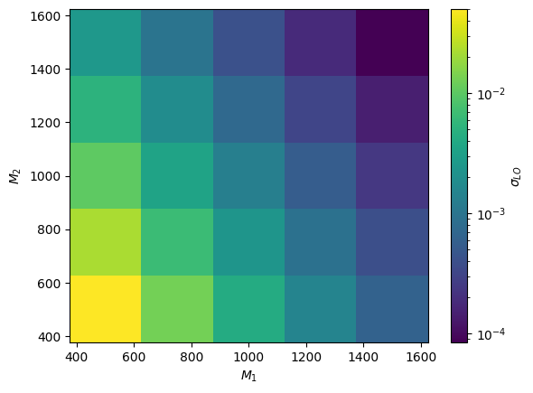
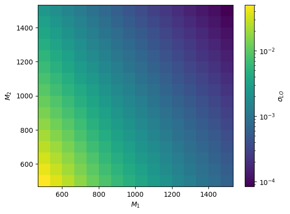
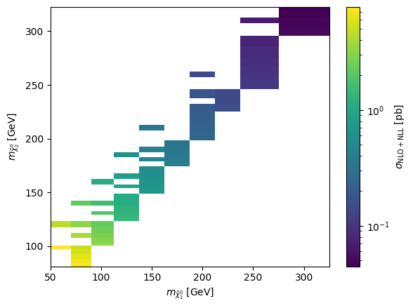
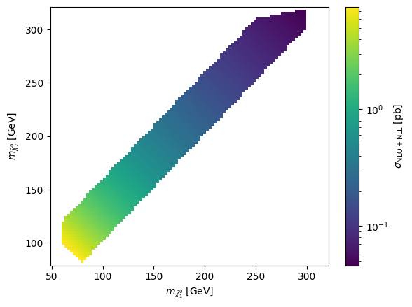

Interpolation
[1]:
import urllib.request
import hepi
import numpy as np
from hepi.run import resummino as rs
from hepi.run import spheno as sp
sp.set_path("SPheno")
rs.set_path("resummino")
[2]:
for a,b in [(2000002,1000022)]:
for pdf,nlopdf in [("CT14lo","CT14lo")]:
li = [hepi.Input(hepi.Order.LO,13000,a,b,"slha.in",pdf,nlopdf,1., 1.)]
#li=hepi.slha_scan_rel(li,lambda r : [["EXTPAR",1,r],["EXTPAR",2,r]],np.linspace(500.,1500.,16*2))
li=hepi.mass_scan(li,a,np.linspace(500.,1500.,5))
li=hepi.mass_scan(li,b,np.linspace(500.,1500.,5))
dl = rs.run(li,True,True)
/home/apn/data/de.neuwirthinformatik.Alexander/Development/git/hepi/hepi/util.py:101: UserWarning: LHAPDF python binding not installed? Make sure you set PYTHONPATH correctly (i.e. correct python version) if you want to compute PDF uncertainties.
warnings.warn(
Skipped: 25 Not skipped: 0
[3]:
hepi.mapplot(dl,"mass_2000002","mass_1000022","LO",xaxis="$M_1$",yaxis="$M_2$",zaxis="$\sigma_{LO}$",show=True)

[4]:
from smpl import data
xx,yy = data.flatmesh(np.linspace(500,1500,5),np.linspace(500,1500,5))
dll = hepi.interpolate_2d(dl,"mass_1000022","mass_2000002","LO",xx,yy,interpolator="linear")
hepi.mapplot(dll,"mass_2000002","mass_1000022","LO",xaxis="$M_1$",yaxis="$M_2$",zaxis="$\sigma_{LO}$",show=True,fill_missing=False)
#print(dll["LO"])

[5]:
(dl["LO"].to_numpy()-dll["LO"].to_numpy())/dl["LO"].to_numpy()
[5]:
array([0.0+/-0.0016154263871670225,
1.5539029389273503e-16+/-0.0015909845253920855,
1.665699711616912e-16+/-0.0015822520490069067,
0.0+/-0.0015819508546576252, 0.0+/-0.001587055618200895,
0.0+/-0.0014827480507491498,
-1.3039619234566496e-16+/-0.001445349985972156,
1.257633877129178e-16+/-0.0014266141005402125,
2.384467240468002e-16+/-0.00142076671547182,
1.1118908908490573e-16+/-0.0014217864616282267,
0.0+/-0.0014085512991095304,
1.8508613222236997e-16+/-0.001367325296714199,
1.6602131115312832e-16+/-0.0013448653411302681,
1.4892845047421288e-16+/-0.0013341627341690635,
0.0+/-0.0013314060188204806, 0.0+/-0.001361907903727031,
-1.1779974384479693e-16+/-0.0013226213444905682,
0.0+/-0.0012988387152938962, 0.0+/-0.0012854820635719117,
0.0+/-0.001279159351555103, 0.0+/-0.0013320552441462043,
0.0+/-0.0012963384696511003,
2.2802366353531297e-16+/-0.001272302136817206,
1.9054767539780033e-16+/-0.0012573895051737369,
0.0+/-0.0012490700235172464], dtype=object)
[6]:
from smpl import data
xx,yy = data.flatmesh(np.linspace(500,1500,16),np.linspace(500,1500,16))
dll = hepi.interpolate_2d(dl,"mass_1000022","mass_2000002","LO",xx,yy,interpolator="cubic")
hepi.mapplot(dll,"mass_2000002","mass_1000022","LO",xaxis="$M_1$",yaxis="$M_2$",zaxis="$\sigma_{LO}$",show=True,fill_missing=False)
#print(dll["LO"])

[7]:
for a,b in [(2000002,1000022)]:
for pdf,nlopdf in [("CT14lo","CT14lo")]:
li = [hepi.Input(hepi.Order.LO,13000,a,b,"slha.in",pdf,nlopdf,1., 1.)]
#li=hepi.slha_scan_rel(li,lambda r : [["EXTPAR",1,r],["EXTPAR",2,r]],np.linspace(500.,1500.,16*2))
li=hepi.mass_scan(li,a,np.linspace(500.,1500.,16))
li=hepi.mass_scan(li,b,np.linspace(500.,1500.,16))
dl2 = rs.run(li,True,True)
hepi.mapplot(dl2,"mass_2000002","mass_1000022","LO",xaxis="$M_1$",yaxis="$M_2$",zaxis="$\sigma_{LO}$",show=True)
Skipped: 256 Not skipped: 0
[8]:
from smpl import stat
dll = hepi.interpolate_2d(dl,"mass_1000022","mass_2000002","LO",xx,yy,interpolator="cubic")
print(stat.mean(np.abs((dl2["LO"].to_numpy()-dll["LO"].to_numpy())/dl2["LO"].to_numpy())))
dll = hepi.interpolate_2d(dl,"mass_1000022","mass_2000002","LO",xx,yy,interpolator="linear")
print(stat.mean(np.abs((dl2["LO"].to_numpy()-dll["LO"].to_numpy())/dl2["LO"].to_numpy())))
# exponential dependency
dll = hepi.interpolate_2d(dl,"mass_1000022","mass_2000002","LO",xx,yy,interpolator="linear",pre=np.log,post=np.exp)
print(stat.mean(np.abs((dl2["LO"].to_numpy()-dll["LO"].to_numpy())/dl2["LO"].to_numpy())))
dll = hepi.interpolate_2d(dl,"mass_1000022","mass_2000002","LO",xx,yy,interpolator="cubic",pre=np.log,post=np.exp)
print(stat.mean(np.abs((dl2["LO"].to_numpy()-dll["LO"].to_numpy())/dl2["LO"].to_numpy())))
0.013+/-0.013
0.22+/-0.25
0.009+/-0.009
0.0003+/-0.0004
[9]:
(dl2["LO"].to_numpy()-dll["LO"].to_numpy())/dl2["LO"].to_numpy()
[9]:
array([-4.127045252457755e-16+/-0.0016154263871672174,
0.00016204064752268907+/-0.0016061995454346707,
7.899466661049401e-05+/-0.0015996085411364648,
1.0198409639045345e-05+/-0.0015943027134069736,
3.381517514805588e-06+/-0.0015900286956439906,
1.6429380091850346e-05+/-0.0015867754012363752,
9.09030429285613e-06+/-0.0015844121424196667,
2.3257250976972537e-06+/-0.0015828310952028678,
1.2306804678300649e-06+/-0.0015817809057453059,
1.2989387602054172e-05+/-0.0015811959210456758,
1.5105056790539695e-05+/-0.0015812344985740665,
4.822013005717258e-06+/-0.0015817493174891165,
-1.8196719976453046e-05+/-0.0015827168599134246,
-4.17830305696477e-05+/-0.0015840045185745641,
-4.627067310043878e-05+/-0.0015854661853236416,
1.3492302996739452e-15+/-0.0015870556181992838,
-0.0020947948557539843+/-0.0015749271503873875,
-0.001827234525733222+/-0.0015641792417779151,
-0.001737357985193286+/-0.0015559387457616666,
-0.0016025259548470953+/-0.0015492206281870328,
-0.0014120262604475963+/-0.0015435370792976346,
-0.001267415242122386+/-0.0015388589659004223,
-0.0012201483385285224+/-0.0015354619961106624,
-0.0012012210879590252+/-0.001533102377151947,
-0.001177691658636005+/-0.0015315120113205231,
-0.001146615092110711+/-0.0015305681287783772,
-0.00109603591879439+/-0.0015300212380110476,
-0.0010467208459627128+/-0.0015301335151940993,
-0.00100680803808813+/-0.0015307300831122323,
-0.0009758696061800343+/-0.001531704381815631,
-0.0009540558227900879+/-0.0015330098782817378,
-0.0009356177752132463+/-0.0015345227256177184,
-0.0018327393339744268+/-0.0015374437423209789,
-0.0016739790930900156+/-0.0015257654357531349,
-0.0016150375113767484+/-0.0015165121810637946,
-0.0014498764470874917+/-0.0015088982349722598,
-0.0012034817199528868+/-0.0015022421749022268,
-0.0010431882534704038+/-0.0014966973238556983,
-0.0010115790886311218+/-0.0014925031507777777,
-0.0010286143913593375+/-0.00148946535519607,
-0.0010395356569191882+/-0.0014874363780822638,
-0.001020798439168176+/-0.0014860410795116995,
-0.0009804356228346987+/-0.0014852872063485806,
-0.0009181213557891618+/-0.001484919292417093,
-0.0008488790474656736+/-0.0014850313830390306,
-0.0007972700952082769+/-0.0014856574231599114,
-0.000779958313367415+/-0.0014866757763899107,
-0.0008078337291643725+/-0.001487956828859609,
-0.0007651614136694679+/-0.0015043594032263716,
-0.0007889016695700366+/-0.0014920390656751551,
-0.0008281001633097612+/-0.0014821560187641485,
-0.0006980015503948414+/-0.0014738603707737385,
-0.0004658982003217055+/-0.0014666448360820545,
-0.00031965249578263995+/-0.0014604917870243666,
-0.00033149632827275146+/-0.001455736388198304,
-0.0003984519292607344+/-0.001452213813928167,
-0.00045619358982922553+/-0.0014496179749596157,
-0.00047616885423080617+/-0.0014478997348396515,
-0.00045189567786245005+/-0.0014467528795092423,
-0.0003948654532194826+/-0.0014461048388058875,
-0.0003241031446365939+/-0.001445927933715794,
-0.00026834178282807744+/-0.0014461547588864013,
-0.00026057701032839966+/-0.0014467917123162758,
-0.00033198707563784294+/-0.0014478199353751221,
0.00020234180987704792+/-0.001476155797449157,
2.074978035614464e-05+/-0.0014633169374105976,
-0.00010223091119930767+/-0.001452890936376741,
-2.1174776414273796e-05+/-0.0014441750853947408,
0.00019694656898712118+/-0.0014365216075682495,
0.00032502485516585565+/-0.0014300078560942077,
0.0002756767595022684+/-0.001424859677481566,
0.00016710600177075066+/-0.0014208650771406466,
6.90414646989383e-05+/-0.0014178752632371435,
1.8964741666820888e-05+/-0.001415699527120308,
2.833520510171632e-05+/-0.001414196711446107,
8.277282717462988e-05+/-0.0014132293935249815,
0.0001491975616010925+/-0.0014127570770315005,
0.00019777141927011961+/-0.0014127196166847428,
0.0001936635210263972+/-0.0014130325092557103,
8.64700656723777e-05+/-0.0014138280554704162,
0.0006614751233934209+/-0.0014526089372864897,
0.00039109489547785683+/-0.0014392630499197503,
0.00021988857522610073+/-0.001428478356882505,
0.0002933461459970699+/-0.001419369381654935,
0.0005118398581397116+/-0.0014114296686499885,
0.0006367216604754928+/-0.0014046711472600866,
0.0005682364266024101+/-0.0013991520815747139,
0.00043227129016781693+/-0.0013948399573729523,
0.0003129363641262612+/-0.0013914872400353387,
0.0002504449297746508+/-0.0013888654686960752,
0.0002532283197134302+/-0.0013869591681428487,
0.00030437957800180746+/-0.0013856965256998784,
0.0003777202099718094+/-0.001384879679641426,
0.0004312985341299746+/-0.0013845032713239835,
0.00041294552438406336+/-0.0013846577387370829,
0.00027897419076768515+/-0.0013852582867922563,
0.000571892373133831+/-0.0014329136529402716,
0.00027451446814847404+/-0.001419332572454846,
0.0001163770446746076+/-0.0014081614516378484,
0.0002128171748538963+/-0.0013987978836554993,
0.0004527147965362847+/-0.0013906401288095122,
0.0005916034510827378+/-0.0013835885053917044,
0.0005213731348463789+/-0.0013778503147790452,
0.00038181193586475106+/-0.0013732534947618388,
0.00025925344742548716+/-0.0013695408226350385,
0.0001967698612518345+/-0.0013666010523992853,
0.00019943610911176625+/-0.0013643270676041465,
0.0002579983232706537+/-0.0013626276792415828,
0.0003416528526925713+/-0.0013614898870195956,
0.00040177668040400116+/-0.0013609024253757635,
0.00039002000778150025+/-0.0013607677087680208,
0.00024450402818630945+/-0.0013610942301421523,
0.0001752459057099367+/-0.0014162540061975495,
-0.00010507941551130467+/-0.0014024273727459094,
-0.00022292835760934622+/-0.0013910881339846534,
-8.844048416712408e-05+/-0.001381503993332736,
0.0001893224814166042+/-0.001373150468380312,
0.00034452820123206246+/-0.0013659356178776093,
0.0002902186747921149+/-0.0013600081942496617,
0.00015864782153500215+/-0.001355100942177345,
4.3964411167915844e-05+/-0.0013511137130056041,
-1.7063402274990644e-05+/-0.0013479030015842977,
-6.600256737615381e-06+/-0.0013452930183397,
6.327646784262534e-05+/-0.0013432381830511572,
0.00015621468099765522+/-0.0013417883712233956,
0.00022953135356524394+/-0.0013408899792545397,
0.00022663362652220785+/-0.0013404861308847368,
7.614007931976805e-05+/-0.0013405894864823966,
-8.080994119853353e-05+/-0.001401150562525095,
-0.0003488811670175543+/-0.0013875355541601063,
-0.00044400181175782987+/-0.0013761601626848384,
-0.0002782577197916888+/-0.0013664140210345155,
1.8770912136564692e-05+/-0.001357988818677397,
0.00018991665331747888+/-0.0013506640278806005,
0.00014580706948623957+/-0.001344534269954786,
1.923343341451463e-05+/-0.0013394458052210564,
-9.807416114379752e-05+/-0.0013352597147506596,
-0.00015500505912297306+/-0.0013317553383565195,
-0.00013914292968151526+/-0.001328859990977271,
-6.58321621398651e-05+/-0.0013265647816681542,
3.4768084055270045e-05+/-0.0013248168293612766,
0.00011866810516740127+/-0.0013235758246761772,
0.00011925473072924332+/-0.0013228783255165367,
-3.785839264811367e-05+/-0.0013228209102155617,
-6.287624153263622e-05+/-0.001387427950926512,
-0.00035136448787594104+/-0.00137404986159888,
-0.0004403034562826165+/-0.0013628094434297142,
-0.00026943134144566324+/-0.0013530910792030769,
3.355802096449835e-05+/-0.0013446106194470145,
0.0002120273871358777+/-0.0013371588505492148,
0.00016584654860746296+/-0.0013309220044800249,
3.302626927710797e-05+/-0.0013257527274023952,
-9.067375849365942e-05+/-0.001321349779295159,
-0.00014969204058024076+/-0.0013176304566135365,
-0.00013760309591209985+/-0.00131455573997321,
-6.224336822584827e-05+/-0.0013120431201852011,
4.5196779975150905e-05+/-0.0013099886798565244,
0.00013052443412966847+/-0.001308445440093883,
0.00012926251566708927+/-0.0013075117722126395,
-3.431871230718223e-05+/-0.0013071910008606664,
8.877532852234534e-06+/-0.0013752072038065114,
-0.0003048252237698831+/-0.0013621220317500192,
-0.0004011273339865375+/-0.0013510781307932134,
-0.0002242089767933572+/-0.0013414807353293193,
8.659788567329489e-05+/-0.0013329157283516282,
0.00026563106677881854+/-0.0013254057595738164,
0.0002150677798138186+/-0.0013191371045198517,
7.543649099808121e-05+/-0.0013138300310721897,
-5.020562111737058e-05+/-0.0013092858541205222,
-0.0001181645976880951+/-0.0013054483690462316,
-0.00010574822900438286+/-0.001302208987949035,
-2.7457196163413707e-05+/-0.0012994413625850836,
8.249971002769306e-05+/-0.0012971553583712091,
0.00016956155498297425+/-0.0012954031470786282,
0.0001673033192157505+/-0.0012942139112335097,
-1.051537118471896e-06+/-0.0012935860253022796,
1.4584247365200698e-05+/-0.001364393703532076,
-0.0003240024339831982+/-0.0013517635917094013,
-0.0004192210754942873+/-0.001340940666781041,
-0.0002313764271028756+/-0.0013313815944865479,
9.097829188845897e-05+/-0.00132286336262491,
0.0002696762348012183+/-0.0013153274265532919,
0.00021981270355597094+/-0.0013089666261854281,
8.064778251641807e-05+/-0.001303553950468684,
-5.132492163882714e-05+/-0.0012989642653409928,
-0.00011891376681753614+/-0.0012950160510817575,
-0.00010458043598495546+/-0.0012915699739002207,
-2.118177449748371e-05+/-0.001288604796748706,
9.039499688076937e-05+/-0.0012861523492355856,
0.00018084428713364292+/-0.001284217739575553,
0.0001794908726762106+/-0.0012827532645122322,
5.216828645038237e-06+/-0.001281828322895562,
-7.563808472403e-05+/-0.0013549404449972214,
-0.0004256355830148287+/-0.001342799609458292,
-0.0005099808401336674+/-0.0013321681531162039,
-0.0003080369095875971+/-0.0013227225494564067,
2.272613114003409e-05+/-0.001314261167866558,
0.00021032954131126514+/-0.001306671010806992,
0.00016577113628834774+/-0.001300236400429842,
2.7138819190149278e-05+/-0.0012948123476808372,
-0.00010307661181478884+/-0.001290140970488899,
-0.00016492650513666405+/-0.0012860450599738375,
-0.0001465043069806988+/-0.001282444121986274,
-6.069978310154756e-05+/-0.001279351202005733,
5.7525172878786904e-05+/-0.0012767540103996962,
0.00015116539345108457+/-0.0012745915041195654,
0.00015133933811301768+/-0.001272902925381262,
-2.5481337653793128e-05+/-0.001271756724398985,
-0.00020430674883859318+/-0.001346600659992829,
-0.0005520968517504453+/-0.0013349162666052156,
-0.0006220737559200378+/-0.0013245635953381774,
-0.00041132339535480435+/-0.001315273255445316,
-7.153873079302709e-05+/-0.0013068220309187621,
0.0001269753941258208+/-0.0012992177102487742,
8.427970058124029e-05+/-0.0012927860694650587,
-4.742879230333612e-05+/-0.0012873281270882407,
-0.00017058203309093455+/-0.0012825307574787727,
-0.00022968728014538542+/-0.001278296556620345,
-0.00020787127648808863+/-0.001274609332622356,
-0.00011694787245371972+/-0.001271423174009526,
6.069966948449475e-06+/-0.0012686442960820412,
0.00010337726457424577+/-0.001266287063084491,
0.00010507444419722617+/-0.001264423620388504,
-7.133885396628107e-05+/-0.001263134972474288,
-0.0002410739769788234+/-0.0013390603798948543,
-0.0005855094652249528+/-0.0013278504949617454,
-0.0006529959315203705+/-0.0013178320993784795,
-0.00043824702455191823+/-0.0013086746363412225,
-9.691678377124997e-05+/-0.0013002755050425254,
9.889536137057949e-05+/-0.0012927405604039898,
6.039548357847316e-05+/-0.001286315876717784,
-6.878424861027368e-05+/-0.0012807588265754063,
-0.0001877166114452211+/-0.0012758790028146482,
-0.00024859238182437784+/-0.0012715786830530362,
-0.00022579774517204394+/-0.0012678059221466287,
-0.00013427514106510572+/-0.0012644584344697163,
-1.0535537164217876e-05+/-0.0012615262541106722,
8.942457063640743e-05+/-0.0012590568816031771,
9.21749252418909e-05+/-0.0012570870689284294,
-8.642296967596324e-05+/-0.001255670886662506,
-3.5117582447420925e-16+/-0.001332055244145646,
-0.00035937095846981114+/-0.0013212454297169308,
-0.0004409792096084742+/-0.0013115559915172536,
-0.0002432852316549673+/-0.0013025906102734559,
7.767929102692437e-05+/-0.001294351732591518,
0.000256981222052556+/-0.0012869006720839112,
0.00021018666902285357+/-0.0012804582323263482,
7.028200240307518e-05+/-0.0012748346532102895,
-5.868459704079617e-05+/-0.0012699385580342223,
-0.00012617141125908254+/-0.0012655949706406222,
-0.00011252231730407305+/-0.0012616831987138997,
-2.777991257122016e-05+/-0.0012581935763035373,
8.919720156827438e-05+/-0.0012551529032158745,
0.00018462963780929018+/-0.0012526029315386102,
0.00018373391712617177+/-0.0012505698636003345,
-1.6102817093322409e-16+/-0.001249070023516848], dtype=object)
[10]:
import matplotlib.pyplot as plt
dl = hepi.load(
urllib.request.urlopen(
"https://raw.githubusercontent.com/APN-Pucky/xsec/master/json/pp13_hinosplit_N2N1_NLO%2BNLL.json"
),
dimensions=2,
)
hepi.mapplot(dl,"N1","N2","NLO_PLUS_NLL_NOERR",xaxis="$m_{\\tilde{\\chi}_1^0}$ [GeV]",yaxis="$m_{\\tilde{\\chi}_2^0}$ [GeV]" , zaxis="$\\sigma_{\\mathrm{NLO+NLL}}$ [pb]")
plt.show()
xx,yy = data.flatmesh(np.linspace(50,320,100),np.linspace(80,320,100))
dll = hepi.interpolate_2d(dl,"N1","N2","NLO_PLUS_NLL_NOERR",xx,yy,interpolator="linearnd",pre=np.log,post=np.exp)
hepi.mapplot(dll,"N1","N2","NLO_PLUS_NLL_NOERR",xaxis="$m_{\\tilde{\\chi}_1^0}$ [GeV]",yaxis="$m_{\\tilde{\\chi}_2^0}$ [GeV]" , zaxis="$\\sigma_{\\mathrm{NLO+NLL}}$ [pb]",fill_missing=False)


[ ]: